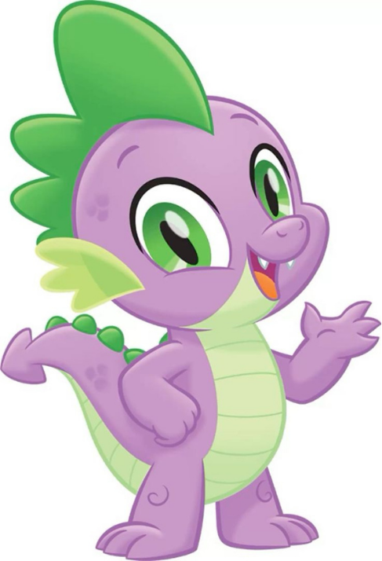
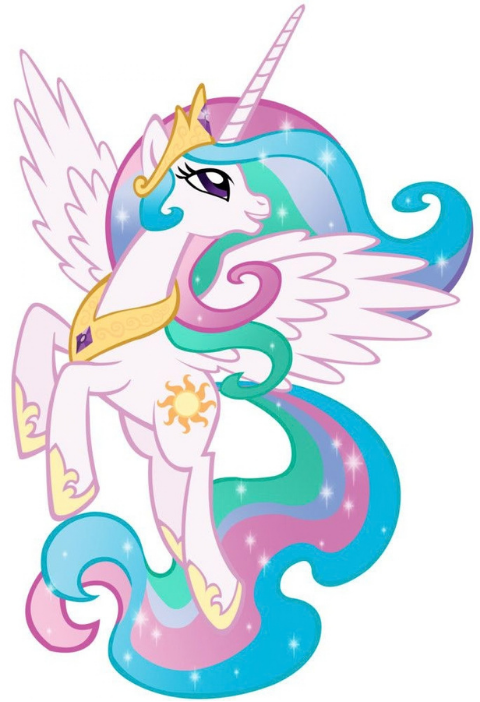
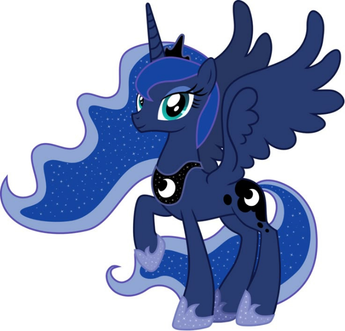

Twilight Sparkle
A Princesa da Amizade. É extremamente inteligente, adora livros e representa o elemento da Magia.
Na encantada terra de Equestria, pôneis de todas as espécies vivem em harmonia. Acompanhe a jornada de Twilight Sparkle e suas amigas enquanto elas exploram o valor da lealdade, generosidade, bondade, honestidade, alegria e magia.

A Princesa da Amizade. É extremamente inteligente, adora livros e representa o elemento da Magia.

Uma Pégaso rápida e competitiva que cuida do clima de Ponyville. Representa a Lealdade.

Entusiasta e hiperativa, adora dar festas e fazer todos sorrirem. Representa a Alegria.

Uma estilista elegante e generosa que comanda a boutique de moda. Representa a Generosidade.

Uma pônei trabalhadora da fazenda Macieira Doce, conhecida por sua força e Honestidade.

Doce e tímida, ela tem uma ligação especial com os animais. Representa a Bondade.

O fiel assistente de Twilight Sparkle. É um pequeno dragão leal e com um grande coração.

A sábia governante de Equestria responsável por erguer o sol todos os dias.

Irmã caçula de Celestia, é responsável por erguer a lua e proteger os sonhos dos pôneis.